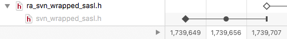

The timeline displays the logs for the selected items in a compact, visual style which enables the comparison of multiple logs by stacking them vertically above one another.
Each item’s log is represented as a single horizontal strip, with the oldest revision on the left and newest revision on the right.
The date of each revision is displayed in compact form stacked from top to bottom in the timeline’s axis.
By default, the axis is collapsed to show just the log items’ revision numbers. You can expand the timeline axis to display additional information about the log items by clicking on the disclosure button to the left of the axis.
Items whose histories’ contain branch points (including simple moves and copies) are displayed with a disclosure button next to the item’s name. Expanding the disclosure button reveals the ancestor’s history and the branch point on the timeline:

In the above example ra_svn_wrapped_sasl.h was branched from svn_wrapped_sasl.h at revision 1,739,707.
The revision symbols used have the following meanings:
| The item was added to the repository either through an import or by being added to a working copy. | |
| The item was branched. Branching operations include copies, moves and renames. Expanding the timeline will reveal the source of the branch operation, indicating whether the item was copied or moved. | |
| The item was modified. Both content and property modifications are displayed in this way. | |
A change was committed on the item’s path. The item itself was not modified. Such modifications include:
|
|
| The item was deleted. |